| |
|
| Cairo on AIX | Cairo support has been added to the AIX platform. This enables
advanced graphics support on AIX.
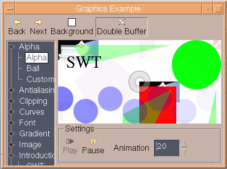 |
| |
|
| |
|
| JNI Generator | A new plugin based tool has been added to simplify the process of generating the SWT JNI code. For more info
click here.
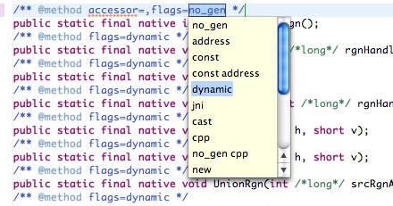 |
| |
|
| |
|
| SWT for 32-bit Cocoa | 32-bit OSX Cocoa has joined the lineup of supported configurations for which SWT and Eclipse are routinely
built. This implementation is currently early access. Everyone is encouraged to download and test these new builds, and
to log bugs in bugzilla.
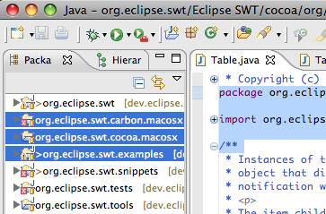 |
| Block selection in StyledText | StyledTexts can be switched into block selection mode with new API StyledText.setBlockSelection(true).
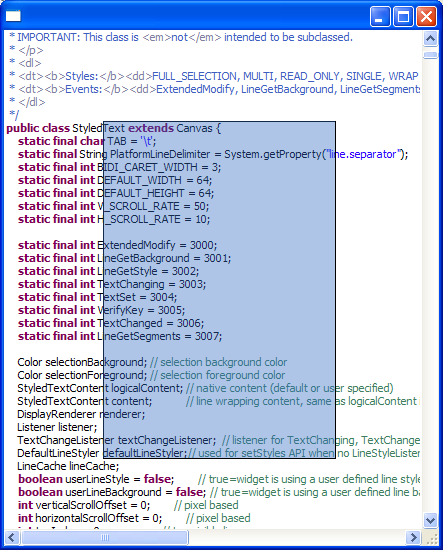 |
| |
|
| SWT for 64-bit Cocoa | 64-bit OSX Cocoa is now available. As with the 32-bit implementation, this work is under active development, but available as an early access release. Everyone is encouraged to download and test these new builds, and to log bugs in bugzilla. |
| JavaScript-to-Java | JavaScript can now call out to Java. Supported types are numbers, booleans, strings, null's, and arrays (example snippet). |
| Improved Java-to-JavaScript | Java can now call into JavaScript. An expression is evaluated in the context of a Browser document and a value is returned. Supported types are numbers, booleans, strings, null's, and arrays (example snippet). |
| New Caret Listener | New API has been added to StyledText to allow you to listen for changes in the caret offset. See StyledText.addCaretListener() and StyledText.removeCaretListener() for more information. |
| New Text Editor Demo | This new example makes extensive use of StyledText to demonstrate how it can be
used to create a multi-font rich text editor with bullets, links and embedded objects.
|
| Cocoa port is no longer **early access** | The Cocoa port of SWT is nearing completion and we've removed the **early access** warning from the download page. Cocoa is feature complete, and is the future of Eclipse on the Mac. Please download and enter bug reports. |
| OpenGL on Cocoa |
OpenGL support has been completed for the Cocoa port.
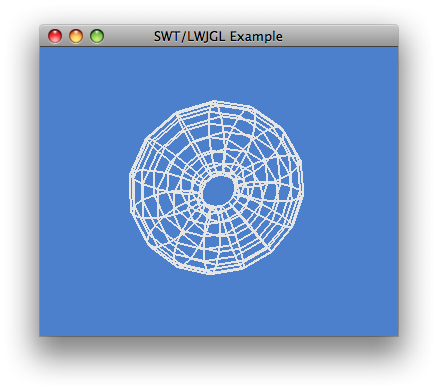 |
| Improved Search Field | The SWT.SEARCH style is now supported on
all platforms, allowing the application to display a text message when
the control is awaiting input. The SWT.ICON_SEARCH and
SWT.ICON_CANCEL hints control the appearance of the search field (example
snippet).
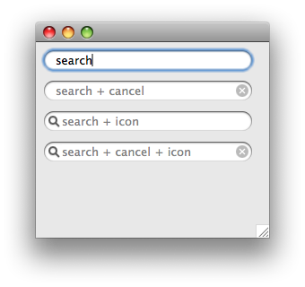 |
| Improved Copy and Paste support | Support has been added to the FileTransfer
class to allow for copy/paste operations between the Explorer and
the Nautilus file manager.
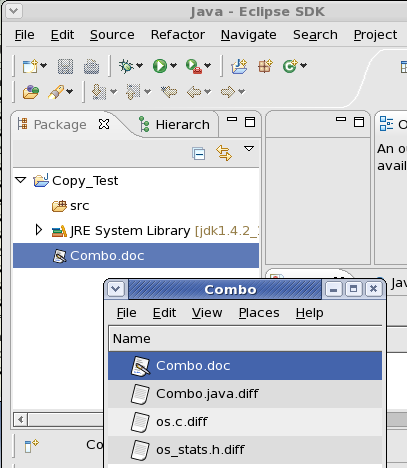 |
| |
|
| Links in StyledText | StyledText now allows users to include add
hyperlinks to the text in the widget.
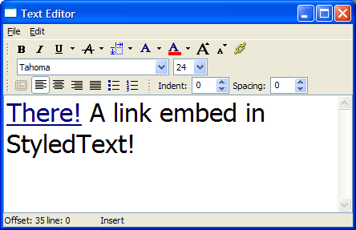 |
| |
|
SWT |
|
| StyledText setMargins/setMarginColor |
New API has been added to StyledText to set margin spacing and color. See Snippet316. |
| Disabling Javascript |
Javascript can be disabled from running in a Browser with the new API |
| Browser Cookies |
Cookies can be created and accessed in the Browser with new API |
| Authentication Listener |
Browser clients can now provide a listener that responds to basic authentication challenges. This is useful for enabling users to access sites without presenting them with a manual authentication prompter. See Snippet317. |
| Alternate button order |
On GTK, it is now possible to change the default button order for Eclipse. To enable this feature, edit .gktrc file and include the line "gtk-alternative-button-order=1". 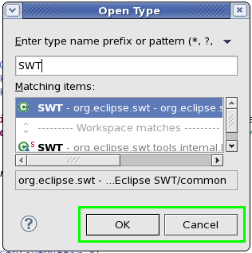 |
| Shell modified state hint |
New API has been added to shell to provide a hint to the user that the window is in a modified state. See Snippet314. 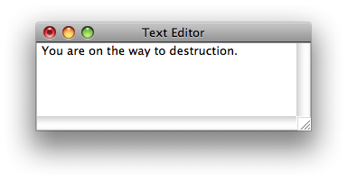 |
| |
|
| DateTime DROP_DOWN | DateTime widgets created with SWT.DATE style can now also have SWT.DROP_DOWN style.
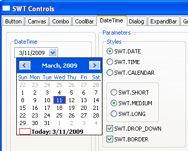 |
SWT |
|
| SWT.SHEET Style for Shell | Sheet windows are now supported on Mac OS X Cocoa.
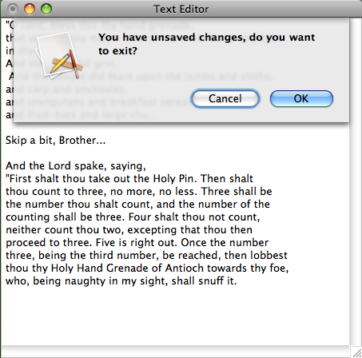 |
| SWT for Solaris x86 | Solaris x86 has joined the lineup of supported configurations for which SWT and Eclipse are routinely built.
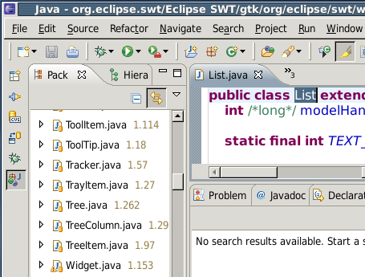 |
| Mozilla Browser Support on Solaris x86 | Mozilla browser support has been added to the Solaris x86 platform.
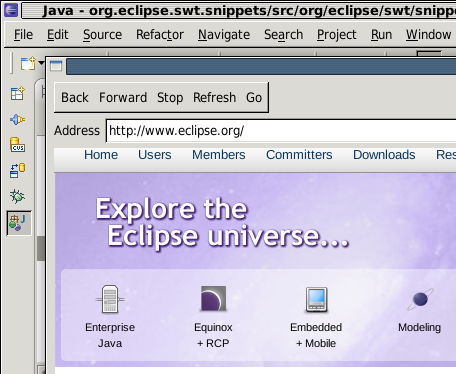 |
| Improved DND feedback on Cocoa | Cocoa drag and drop in trees and tables is fully supported. Aside
from the visual feedback, native features such as automatic collapse of tree items is supported
when the drag.
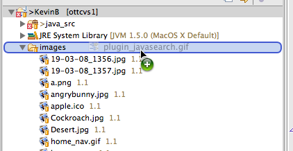 |
| Paper Orientation | Applications can now programmatically select portrait or landscape mode when printing,
or when opening a PrintDialog.
See Snippet318.
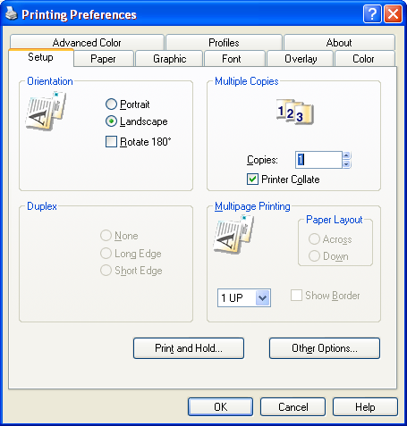 |